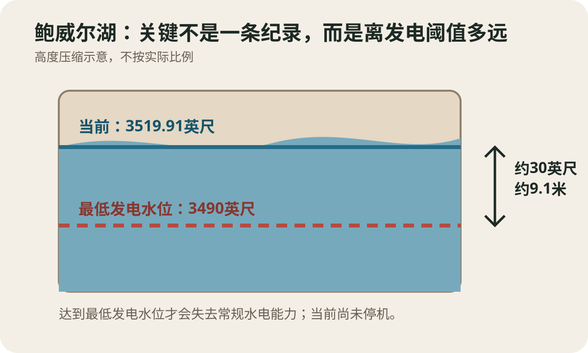
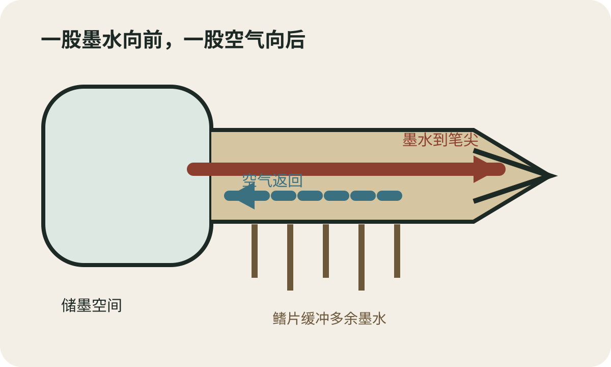
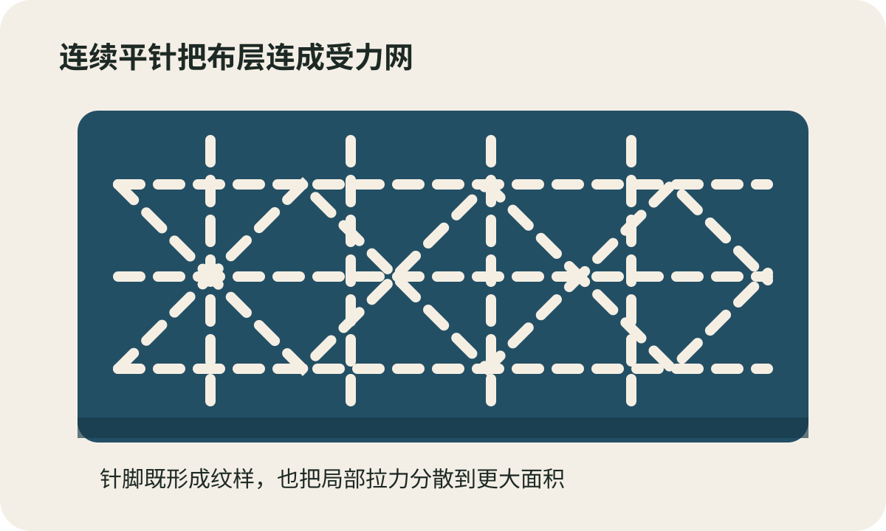
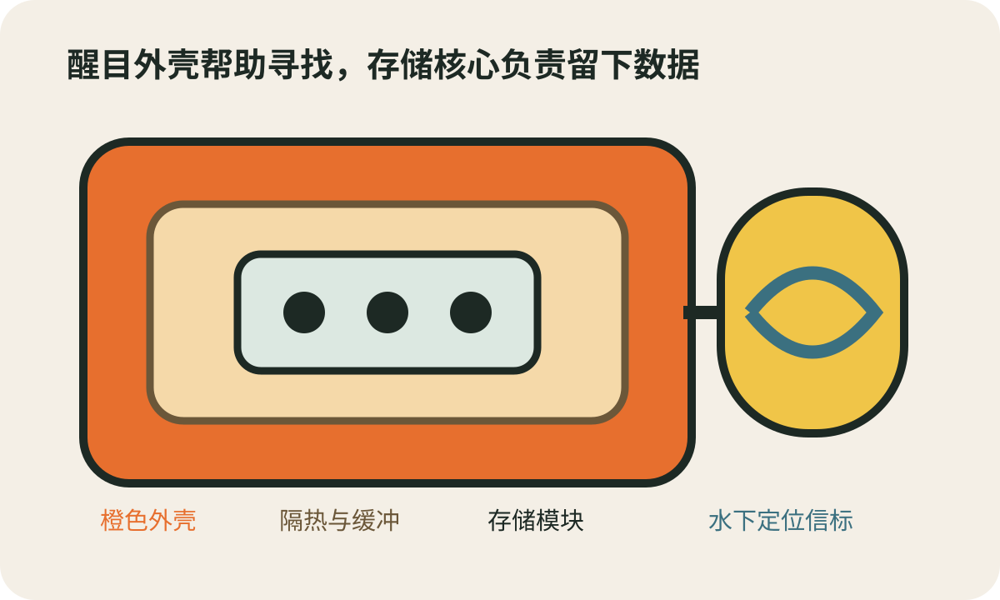

今日热点 01 · 投资 / 公司
伯克希尔二季度增持Alphabet：13F能看见持仓，不能看见下单理由
伯克希尔最新监管申报显示，二季度买入约4810万股Alphabet，季度末合计约1.06亿股，市值约377.6亿美元。数字能确认持仓规模和时点，却不能证明每笔交易由谁决定，也不能替今天的股价给出买卖结论。
发生了什么
Alphabet持股从去年末约1780万股增至二季度末约1.06亿股
美联社根据伯克希尔8月14日晚提交的季度持仓申报报道，公司二季度又买入约4810万股Alphabet。6月30日持有量约1.06亿股，按季末价格计约377.6亿美元；去年12月底则约为1780万股、56亿美元。
增持并非孤立动作。Alphabet在6月安排一笔面向伯克希尔关联方的100亿美元股票私募，伯克希尔同期还增加住宅建筑商Lennar持仓，并新建一个规模很小的D.R. Horton仓位。
先看申报边界
13F是季度末快照，不是实时交易记录
美国13F申报列出达到门槛的机构在季度末持有的部分美国上市证券，通常在季末后才公开。它能回答6月30日持有什么、数量大致多少，却不披露季度内每一天的成交价、完整衍生品对冲，也不解释投资理由。
因此，看到申报时市场已经走过一个多月。把季度末仓位直接翻译成“伯克希尔现在仍在买”，时间上可能不成立；把大股东持仓当成适合所有人的投资建议，也忽略了资金规模、税务和持有期限的差别。
组合在怎样变化
科技与住宅建筑增持的同时，部分金融股继续被削减
申报还显示，伯克希尔减少了Capital One等金融类持仓，并退出Constellation Brands。组合变化并非简单从一个行业整体换到另一个行业，而是几笔方向不同、规模差异很大的调整。
Alphabet本身也在加大人工智能基础设施投入。公司预计今年资本支出约800亿美元。对投资者来说，更有用的问题是新增投资能否形成持续现金流，而不是只用“著名机构买了”代替对估值和经营风险的判断。
聊天时可以补一句
名单提供线索，持仓时点和披露缺口决定它不能当作跟单表
13F最适合用来发现值得继续研究的公司与行业，并比较同一机构连续几个季度的变化。单期数字若没有前后序列，很容易把一次私募、普通二级市场买入和历史持仓混成一件事。
还要区分事实与推断：申报确认伯克希尔名下的持仓，不足以单独确认具体投资经理、董事长或首席执行官各自下了哪些指令。作者身份没有公开材料，就应保持未知。
13F告诉你机构在季度末持有什么；它不提供实时仓位、完整交易过程和买入理由。
查看事实与延伸来源
美联社8月15日：Alphabet持股数量、季度变化与其他组合调整
美国证交会：伯克希尔2026年二季度13F持仓表
Alphabet监管文件：6月100亿美元私募的股数与价格
今日热点 02 · 雅典 / 文物保护
泛雅典体育场百余年来首次系统清洗：目标不是把大理石洗白
这座1896年首届现代奥运会主场馆正在进行百余年来首次系统性清洗。养护人员以受控低压清水和蒸汽清除有机沉积、杂草与口香糖，保留石材经时间形成的状态；项目还包括更换跑道、灯光和配套设施。
发生了什么
47层陡峭看台要逐段处理，工程将持续到2026年内
美联社8月16日报道，泛雅典体育场正在进行重建为现代场馆后首次系统性清洗。工作人员用细喷杆向大理石施加受控低压清水，再回收污水；变黑的口香糖等局部污物则用蒸汽处理。
工程范围不止清洗。希腊奥委会此前公布的改造还包括更换跑道、升级灯光和支持设施，资金由私人企业提供，施工接受文化部门专家指导。体育场跑道因重铺从6月26日至8月31日暂停对游客开放。
为什么不能追求雪白
清除沉积物与磨掉石材表层，是两种完全不同的结果
石材表面会累积灰尘、生物膜、植物和饮料污迹，阴影较多的区域尤其明显。养护人员要把附着层控制性地移走，以便观察材料状况；压力过高或化学处理过强，则可能损伤表面和历史痕迹。
高级养护的目标是材料稳定、污物可控和变化可记录。视觉上更亮只是可能结果之一。若把“恢复原貌”理解成让所有区域颜色完全一致，反而会抹掉石材老化、修补和使用留下的信息。
这座场馆为何特殊
古代场址在19世纪重建，并承办1896年首届现代奥运会
体育场嵌在天然谷地中，古代曾用于运动竞赛，后来长期荒废。19世纪重建时大量使用与雅典卫城同类的白色大理石，因而得名Kallimarmaro，意为“美丽的大理石”。
除了马拉松终点和奥运仪式，这里也举办过演唱会、拳击、时装活动与国家庆典。频繁使用让它不是一件封存在玻璃后的文物；养护必须同时处理历史材料、公共活动和游客通行。
接下来观察什么
9月火炬交接先使用弧形端，全面工程仍未结束
当前清洗集中在体育场弧形端，计划赶在9月10日达喀尔青奥会火炬交接前完成这一部分。达喀尔青奥会定于10月31日至11月13日举行，将成为非洲首次承办的奥林匹克赛事。
仪式按时举行只能说明局部区域具备使用条件，不能等同于全部养护完工。后续更值得看的是施工记录是否公开、材料状态如何长期监测，以及大型活动如何减少新的磨损和污渍。
文物清洗追求去除有害沉积并看清材料状态，不追求把每一块旧石材变成同样的白。
查看事实与延伸来源
美联社8月16日：清洗方法、47层看台与工程时间
希腊奥委会：泛雅典体育场升级与修复计划
泛雅典体育场官方通知：跑道重铺期间的开放调整
今日热点 03 · 美国西部 / 水与电力
鲍威尔湖水位跌至历史最低：距水电停机线约9米
美国第二大水库鲍威尔湖在8月15日降至海拔3519.91英尺（约1072.9米），略低于2023年的旧纪录。水面距离格伦峡谷大坝最低发电水位约30英尺（9.1米）；这会同时影响发电、供水调度和旅游设施，但不等于大坝已经停止发电。

当前水位约3519.91英尺，最低发电水位为3490英尺；两者只差约30英尺。高度压缩绘制，仅示意关键阈值，不按实际比例。原创示意。
发生了什么
新纪录比2023年旧低点略低，年初以来已下降约6米
美联社根据美国垦务局数据报道，鲍威尔湖8月15日水位降到海拔3519.91英尺，略低于2023年4月的旧纪录。它比今年年初低20多英尺；同一水系的米德湖也在一周前跌至历史低位。
这两座水库调节科罗拉多河，服务美国西部七个州的城市、农业、生态和发电。当前数字首先说明系统储水继续变少，不代表所有用户会在同一天断水，也不代表格伦峡谷大坝已经停机。
怎么理解
水位每下降一段，可用库容和发电条件会一起收紧
水库发电依靠水位差推动涡轮。美国垦务局把3490英尺列为最低发电水位；当前水面距它约30英尺。接近阈值时，可用于调节放水和应对干旱的余地也变小，联邦部门已警告需要重大干预来避免年底跌破。
短缺不是一个冬天造成的。长期用水超过补给、2026年冬季异常干燥和升温带来的蒸发与积雪损失叠在一起。旅游业也会先感到变化：船坡道关闭或迁移，码头要挪向更深水域。
接下来要看什么
接下来，各州要决定如何分担削减
美国联邦政府和流域七州仍在谈新的长期管理方案。垦务局提出的方案可能要求亚利桑那、加利福尼亚和内华达在未来十年显著减少取水，但削减如何计算、由城市还是农业承担，仍需要政治协商。
后续判断应同时看水位、入流、放水和用水规则。一次降雨可以短暂抬高水面，却不能自动修复多年累计的供需缺口；一条纪录线只是把剩余缓冲显示得更清楚。
鲍威尔湖的新低点尚未等于停电或断水；它说明离最低发电水位只剩约9米，分配削减的时间和空间都在缩小。
查看事实与延伸来源
美联社8月17日：历史低水位、3519.91英尺与多重影响
美国垦务局：最低发电水位与2026年重大干预安排
美国垦务局：干旱应对运行协议与鲍威尔湖关键水位
涉猎 01 · 书写 / 流体
钢笔怎样稳定出墨：笔舌同时管理一股墨水和一股空气
钢笔笔尖下方的笔舌开有细墨槽、空气通道和缓冲结构。墨水沿狭窄通路靠毛细作用到达笔尖，空气则补进储墨空间，替代已经流出的体积。两路若失去平衡，笔会断墨、漏墨或突然吐出一滴。

细墨槽把墨水送向笔尖，较宽的空气通路让气泡回到储墨空间；鳍片可暂存压力变化时多出的墨。原创示意，具体结构因笔型而异。
两股流动
墨水出去多少，储墨空间就要补进多少空气
笔舌上的细槽让墨水润湿槽壁并形成连续液柱，毛细作用把它送到笔尖裂缝。书写时纸张继续把墨吸走。若只有墨水向外而没有空气补入，储墨空间压力会下降，流动最终被抑制。
空气通道提供返回路径。气泡进入储墨空间后释放同体积墨水，循环继续。槽太宽，墨水可能受重力快速流出；槽太窄或被干墨、纤维堵塞，笔尖就会断续。
为什么笔舌有很多鳍片
它们更像临时缓冲池，不是装饰散热片
手掌加热、飞机升降或环境温度变化会让储墨空间里的空气膨胀，短时间把更多墨水推向前端。笔舌周围的鳍片和沟槽可先容纳部分多余墨水，降低它直接落到纸上的机会。
这些结构不能保证永不漏墨。装墨过满、笔尖朝下剧烈摇动、密封老化或通道污染仍可能破坏平衡。清洗钢笔时最需要处理的，往往正是肉眼不易看清的细槽和回气通道。
钢笔不是靠重力一直倒墨；稳定书写来自细墨槽的毛细流动与回气通道的压力平衡。
查看事实与延伸来源
美国钢笔专利：毛细供墨通道、通气与压力平衡
1903年钢笔专利：真空、回气和突然漏墨问题
美国地质调查局：毛细作用与液体润湿的基础原理
涉猎 02 · 日本 / 纺织
刺子绣先解决耐用和保暖，几何纹样后来才更醒目
刺子绣以连续平针穿过一层或多层布，把薄弱处补强，也能把旧布拼合成新衣。日本农民和劳动者曾用它延长棉布寿命、增加厚度；白线与靛蓝布形成的几何图案，从实用针脚中逐渐发展。

连续平针把布层连接起来，交错路线把受力分散到更大面积。图案很多，针距和做法也因地区与用途而异。原创示意。
从功能开始
一排小针脚既能缝合布层，也能限制破口继续扩大
纽约大都会艺术博物馆把刺子绣描述为一种平针绗缝技术，用来加固织物、延长使用寿命，或把回收布片拼成新衣。多层布被线连接后更厚，也更能抵抗局部拉扯。
19世纪后半叶的一件刺子外套以靛蓝棉布配白色棉线，主体纹样是相扣圆环，底部另有波浪。今天容易先看到装饰效果，当时的保暖、补强和节省布料同样重要。
别把传统压成一种样子
用途、地区和材料不同，针法与图案也不会只有一套标准答案
日本民艺馆藏品中可见绗缝刺子劳动衣，其他地区还有以数线格为基础的密集纹样。把所有蓝底白线、可见修补都称为同一种固定传统，会忽略衣物原本由谁穿、为何修和怎样继续使用。
现代刺子常用于新衣装饰和可见修补，功能已经扩展。判断一件作品时，可以分别看材料是否被补强、针脚如何分散受力，以及图案引用了哪一地区或时期的做法，不必把“实用”和“美观”拆成先后高下。
刺子绣的几何美来自真实的缝合与补强；理解它要同时看针脚、布层、用途和地区差异。
查看事实与延伸来源
大都会艺术博物馆：19世纪刺子外套、补强功能与纹样
日本民艺馆：日本染织藏品中的绗缝刺子劳动衣
大阪世博会日本馆资料：刺子用于修补劳动衣与生活用品
涉猎 03 · 航空 / 事故调查
飞机“黑匣子”为什么是橙色：抗撞击结构护住记录数据的核心
民航所称黑匣子通常包括驾驶舱语音记录器和飞行数据记录器，外壳涂成醒目的橙色以便在残骸中寻找。设备最重要的部分是抗撞击、耐高温的存储模块；水下定位信标能在入水后发出声信号，但电池和探测距离都有边界。

醒目外壳帮助寻找，隔热与抗撞击结构保护存储模块，水下信标负责在有限时间内发出声信号。原创示意，部件位置因型号而异。
记录什么
一台记声音，一台记高度、空速、航向等飞行参数
美国国家运输安全委员会说明，驾驶舱语音记录器收集机组通话、无线电和警报等声音；飞行数据记录器持续保存飞行参数。调查人员会把两类记录与残骸、雷达、维修和目击资料合并分析。
记录器通常装在机尾附近，因为那里往往更可能在撞击中保留。橙色和反光标记帮助搜寻，名字里的“黑”并不是外观要求。设备提供的是证据片段，也不会单独决定事故原因。
怎样保护和寻找
存储模块接受撞击、火和水压测试，信标入水后才开始“鸣叫”
NTSB列出的典型指标包括承受3400g、6.5毫秒的撞击，以及1100摄氏度、30分钟的高温测试。数字描述规定测试条件，不表示整个盒子在任何事故中都不可破坏；重点是让存储介质尽量可读。
水下定位信标接触水后发出37.5千赫声信号，搜索设备可据此缩小范围。旧资料常见至少30天工作期，较新型号和标准可更长；残骸遮挡、海底地形、深度和搜索启动时间都会改变实际可探测距离。
黑匣子的橙色负责被看见，抗撞击与隔热结构负责护住数据；水下信标只是限时搜寻工具。
查看事实与延伸来源
美国国家运输安全委员会：两类记录器、安装位置与典型测试指标
澳大利亚运输安全局：橙色外观、存储模块与适航标准
NTSB安全建议：水下信标续航、探测范围和遮挡限制
“注意力是最稀有、最纯粹的慷慨形式。”
西蒙娜·韦伊《致若埃·布斯凯的信》（1942） · 本刊译
韦伊在1942年4月13日写给诗人若埃·布斯凯的信中说这句话。她所说的注意，不是礼貌地点头，也不是急着把自己的答案递过去；它要求暂时放下判断，让另一个人的处境真正进入视野。慷慨常被理解为给出金钱或时间，这里更难的一步是不给对方套上现成解释。认真听完、准确复述、承认尚未理解，都是这种注意的具体形式。
核对原文与语境
“只要与自然法则相符，再奇妙的事也可能是真的；而实验是检验这种相符性的最好办法。”
迈克尔·法拉第《实验日记第10040条》（1849） · 本刊译
法拉第在研究磁场与光的关系时写下这段实验日记。前半句常被单独摘成对想象力的赞美，后半句才给它装上边界：奇妙并不自动等于可信，必须与已知规律相容，也要让实验反复碰撞。科学允许大胆设想，同时要求仪器、步骤和失败结果都能被检查。惊奇负责提出问题，证据负责决定保留什么。
核对原文与语境
“优良设计，是尽可能少的设计。”
迪特·拉姆斯《优良设计十原则》（20世纪70年代后期起形成） · 本刊译
拉姆斯紧接着用“少，却更好”解释这条原则：减少无关成分，让注意力回到产品的必要功能。这里的“少”不是把按钮藏起来、牺牲可读性，也不是为极简外观增加使用成本。真正的删减要经得住一个问题：拿掉之后，使用者是否仍能理解、操作、维护。若答案是否定的，那只是把复杂性和返工成本转嫁给了别人。
核对原文与语境
“我们给自己讲故事，为了活下去。”
琼·迪迪恩《白色专辑》（1979） · 本刊译
这是《白色专辑》的开头，后文并没有歌颂故事总能带来意义。迪迪恩写人们怎样把零散画面编进熟悉情节，也写这种能力在混乱年代如何失效。叙事能让经验暂时有顺序，却也会筛掉不合脚的事实。听到一套过分顺滑的解释时，可以问它选中了哪些细节，又把哪些偶然、矛盾和沉默留在叙事画面之外。
核对原文与语境
“业精于勤，荒于嬉；行成于思，毁于随。”
韩愈《进学解》（约9世纪初）
《进学解》先让国子先生这样训诫学生，后面却由学生逐项反问：先生勤学、守道、能文，仕途为何仍不顺。整篇带着自嘲和辩难，不能只截成一条保证成功的口号。“勤”与“思”能决定学业和品行怎样形成，不能保证外部评价立即公平。它要求人对过程负责，也提醒人别把所有结果都归因于个人努力和意志。
核对原文与语境